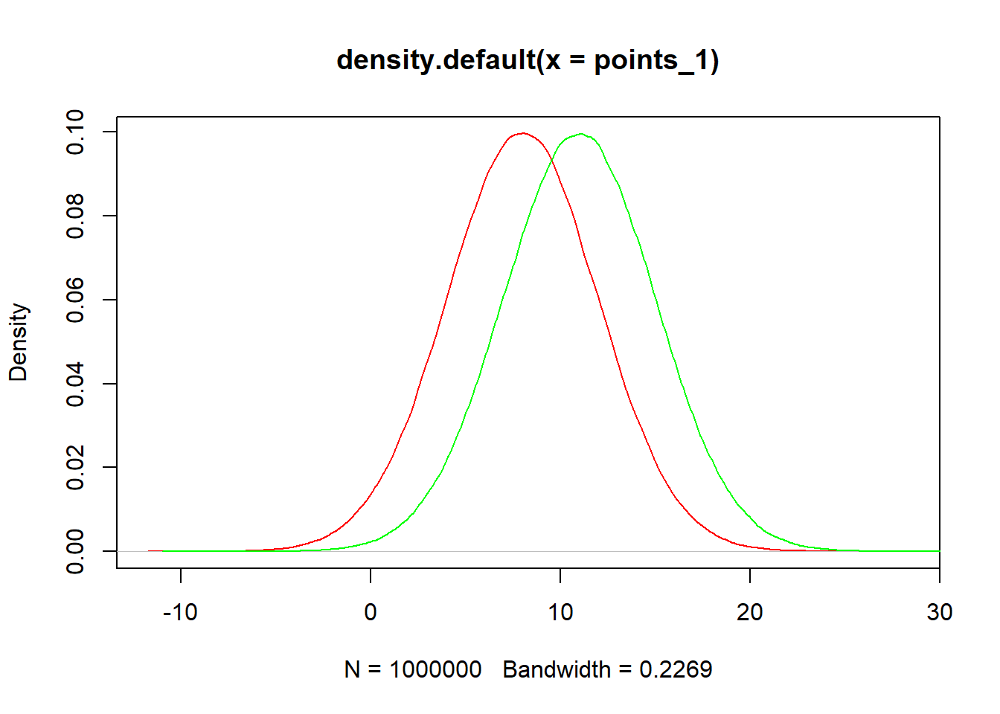

Chapter 5 556 Chapter 12
5.1 12.1
5.1.1 THeory
If \(X \sim f(x;\theta)\), a statistical hypothesis is a statement about the distribution of \(X\). If the hypothesis completely specifies \(f(x;\theta)\), then it is referred to as a simple hypothesis; otherwise it is called composite.
Quite often the distribution in question has a known parametric form with a single unknown parameter \(\theta\), and the hypothesis consists of a statement about \(\theta\).
In this framework, a statistical hypothesis corresponds to a subset of the parameter space, and the objective of a test would be to decide whether the true value of the parameter is in the subset. Thus, a null hypothesis would correspond to a subset \(\Omega_0\) of \(\Omega\), and the alternative hypothesis would correspond to its complement, \(\Omega-\Omega_0\)
In the case of simple hypothesis, these sets consist of only one element each, \(\Omega_0=\{ \theta_0\}\) and \(\Omega -\Omega_0=\{ \theta_1\}\), where \(\theta_0 \neq \theta_1\).
We now must consider sample data, and decide on the basis of the data whether we have sufficient statistical evidence to reject \(H_0\) in favor of the alternative \(H_a\), or whether we do not have sufficient evidence.
That is, our philosophy will be to divide the sample space into two regions, the “critical region” or “rejection region” \(C\), and the nonrejection region \(S-C\). If the observed sample data fall in \(C\), then we will reject \(H_0\).
\(\bar{X}\) is a sufficent statistic for \(\mu\), so we may conveniently express the critical region directly in terms of the univariate variable \(\bar{X}\), and we will refer \(\bar{X}\) as the test statstic. Because \(\mu_1 > \mu_0\), a natural form for the critical region in this problem is to let \(C=\{ (x_1,..., x_n) | \bar{x} \geq c\}\), for some appropriate constant \(c\). That is, we will reject \(H_0\) if \(\bar{x} \geq c\), and we not reject \(H_0\) if \(\bar{x} < c\).
There are two possible error:
Type I error: reject a true \(H_0\). \(P[Type I error]=\alpha\).
Type II error: fail to reject a false \(H_0\). \(P[Type II error]=\beta\).
Note that, \(P[Type I error]=\alpha\) is also referred to as the significance level of the test.
5.1.2 Example
For instance, if \(n=25\), then \(\alpha=0.05\) gives
\[c=\mu_0+Z_{1-\alpha}\sigma/\sqrt{n}=10+1.645 \cdot 4/5=11.316\].
We can verify as follows.
\[\begin{aligned} P[\bar{X}\geq c | \mu=\mu_0=10] &=P[\frac{\bar{X}-\mu_0}{\sigma/\sqrt{n}} \geq \frac{c-\mu_0}{\sigma/\sqrt{n}}] \\ &=P[Z \geq \frac{11.316-10}{4/5}] \\&=P[Z\geq 1.645] \\&=0.05 \end{aligned}\]
Thus, a size \(0.05\) test of \(H_0: \mu=10\) against the alternative \(H_a:\mu=11\) is to reject \(H_0\) if the observed value \(\bar{X} \geq 11.316\).
Note that, the calculation of \(C\) has nothing to do with the alternative. However, \(c\) impacts type II error:
\[\begin{aligned} \beta=P[TII] &=P[\bar{X}<11.316 |\mu=\mu_1=11] \\ &=P[\frac{\bar{X}-11}{4/5}<\frac{11.316-11}{4/5}] \\ &=P[Z <0.395] \\ &=0.645 \end{aligned}\]
My personal note:
\(C\) is only determined by \(H_0\), but the choose of \(C\) can impact type II error. The basic idea of the calculation a region where the probability there will be \(0.05\). And if the observed mean falls into that region, we can reject \(H_0\).
Type II error is to calculate the probability that NOT in the critical region defined by null hypothesis.
Thus, we can set another critical area to illustrate this.
\[P[10 < \bar{X}<10.1006]=P[0 <\frac{\bar{X}-10}{4/5} <0.1257]=0.05\]
However, \(P[Type II error]\) for this critical regiion is:
\[\begin{aligned} P[TII] &=1-P[10<\bar{X}<10.1006|\mu=11] \\ &=1-P[\frac{10-11}{4/5}<Z<\frac{10.1006-11}{4/5}] \\ &=1-P[-1.25 <Z<-1.12425] \\ &=0.9752 \end{aligned}\]
Thus, this critical region is much worse than using the right-hand tail of the distribution of \(\bar{X}\) under \(H_0\).
If we increase the sample size from 25 to 100, we can reduce the Type II error. Specifically,
\[C_2=\mu_0+Z_{1-\alpha} \sigma/\sqrt{n}=10+1.645 \cdot 4/10=10.658\]
Thus, the \(P[TII]\) is:
Type II is the opposite of Type I regarding directions: < vs. >
\[\begin{aligned} P[\bar{X} <10.658 | \mu=11]&=P[\frac{\bar{X}-11}{4/10} < \frac{10.658-11}{4/10}] \\ &=P[Z< -0.855] \\ &=0.196\end{aligned}\]
Note that, we need to choose the tail based on \(H_1\) in order to avoid the type II error. To illustrate, I calculate the following.
Original, right-hand side
\[c=\mu_0+Z_{1-\alpha}\sigma/\sqrt{n}=10+1.645 \cdot 4/5=11.316\].
changed, left hand side
\[c=\mu_0-Z_{1-\alpha}\sigma/\sqrt{n}=10-1.645 \cdot 4/5=8.648\].
Then, we can declare the critical region as \([-\infty, 8.648]\). We can verify whether the probability is 0.05
\[\begin{aligned} P[\bar{X} < c | \mu=\mu_0=10] &=P[\frac{\bar{X}-\mu_0}{\sigma/\sqrt{n}} < \frac{c-\mu_0}{\sigma/\sqrt{n}}] \\ &=P[Z < \frac{8.648-10}{4/5}] \\&=P[Z< -1.645] \\&=0.05 \end{aligned}\]
However, in the case, the type II error is as follows.
\[\begin{aligned} \beta=P[TII] &=P[\bar{X}>8.648 |\mu=\mu_1=11] \\ &=P[\frac{\bar{X}-11}{4/5}>\frac{8.648-11}{4/5}] \\ &=P[Z > -2.94] \\ &=1-P[Z<-2.94] \\ &=1-\Phi(-2.94) \\ &=1-0.00164 \\&=0.9984 \end{aligned}\]
## [1] 0.001641061## [1] 0.9983589Thus, we can see that it is worse than choose the middlle, which has a type II error or 0.9752.
To summarize:
While C is determined by \(H_0\), since you can calculate a c based on a given \(\alpha\) value (which determine the percentile), it is important to incoporate the \(H_1\) into the considertation of determining C.
If \(H_1\) is greater than \(H_0\), it is better to choose the right-hand side, namely “+”. In contrast, if \(H_1\) is smaller than \(H_0\), it is better to choose the left-hand side, namely “-”. It seems it is always better than to choose a middle. (I am not sure about this, actually).
The calculation of Type II error is always use the opposite < or > in the writing of \(P(...)\).
points_1<-rnorm(1000000,mean=8,sd=4)
points_2<-rnorm(1000000,mean=11,sd=4)
plot(density(points_1),col="red")+lines(density(points_2),col="green")
## integer(0)5.1.3 Power function
As above, the computation of \(H_0\) is based on standard normal \(Z\). If critical region is on the right-tail (e.g., \(H_0:\mu=\mu_0, H_1: \mu=\mu_1, \mu_1>\mu_0\)), and we rejct \(H_0\) if \(z_0 \geq z_{1-\alpha}\). That is,
\[P[z_0 \geq z_{1-\alpha}]=\alpha\]
\[\begin{aligned} P[TII] &=P[\frac{\bar{X}-\mu_0}{\sigma/\sqrt{n}} < z_{1-\alpha} |\mu=\mu_1] \\ &=P[\frac{\bar{X}-\mu_0}{\sigma/\sqrt{n}}+\frac{\mu_0-\mu_1}{\sigma/\sqrt{n}} < z_{1-\alpha} +\frac{\mu_0-\mu_1}{\sigma/\sqrt{n}}|\mu=\mu_1] \\ &=P[\frac{\bar{X}-\mu_1}{\sigma/\sqrt{n}}< z_{1-\alpha} +\frac{\mu_0-\mu_1}{\sigma/\sqrt{n}}|\mu=\mu_1] \\ &=\Phi(z_{1-\alpha} +\frac{\mu_0-\mu_1}{\sigma/\sqrt{n}}) \\ &=\beta \end{aligned}\]
Thus, we can get the following:
\[z_{1-\alpha} +\frac{\mu_0-\mu_1}{\sigma/\sqrt{n}}=z_{\beta}=-z_{1-\beta}\]
Thus, we can get the following:
\[n=\frac{(z_{1-\alpha}+z_{1-\beta})^2\sigma^2}{(\mu_0-\mu_1)^2}\]
Thus, for instance, \(\alpha=0.05, \beta=0.1, \mu_0=10, \mu_1=11, \sigma=4\), we can get:
\[n=\frac{(1.645+1.282)^2 \cdot 16}{1}=137\]
Power function:
The power function, \(\pi(\theta)\), of a test of \(H_0\) is the probability of rejection \(H_0\) when then true value of the parameter is \(\theta\).
For simple hypothesis, \(H_0:\theta=\theta_0\) versus \(H_a:\theta=\theta_1\), we have \(\pi(\theta_0)=P[TI]=\alpha\) and \(\pi(\theta_1)=1-P[TII]=1-\beta\).
Type II error: Fix C, then calculate the opposite of \(H_0\), based on \(H_a\). Thus, power function based on \(H_a\) is \(1-P(TII)=1-\beta\).